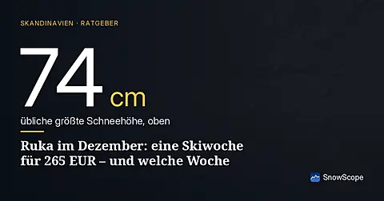
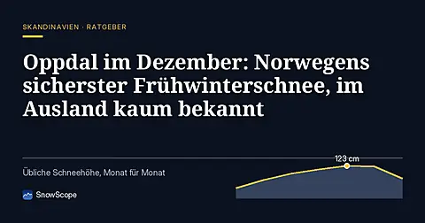
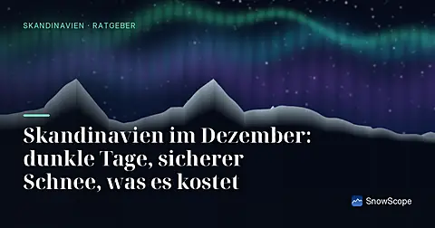

Schneeberichte · Skandinavien
Tägliche Schneeberichte für Skifahrer: wo der Schnee liegt, was kommt und wo du fahren kannst, aus der SnowScope-Schneekarte und Messstationen. Jede Zahl stammt aus den Daten des Tages.
Schnee nach Ländern heute
Die weißesten Länder heute: Schweden (95 %), Finnland (95 %) und Norwegen (94 %).
Am meisten Neuschnee in der kommenden Woche: Norwegen (44 cm), Schweden (19 cm) und Finnland (10 cm).
Schnee heute in den großen Skigebieten
- Abisko · 137 cm
- Sulitjelma Fjellandsby · 124 cm
- Tromsø Alpinpark · 69 cm
- Bydalsfjällen · 48 cm
- Gräftåvallen · 42 cm
- Hemsedal skisenter · 42 cm
- Orsa Grönklitt · 39 cm
- Myrkdalen · 36 cm
- Jølster Skisenter · 35 cm
- Volda skisenter · 32 cm
- Hornindal · 31 cm
- Järvsöbacken · 30 cm
- Lindvallen · 26 cm
- Surnadal · 26 cm
- Åre · 26 cm
- Sunndal alpinsenter · 25 cm
- Rukatunturi · 23 cm
- Saariselka · 23 cm
- Tusten Skiheiser · 23 cm
- Kiririnteet · 22 cm
- Ski Saariselkä · 22 cm
- Ramundberget · 21 cm
- Skarmoen Alpinpark Bodø · 21 cm
- Storlien · 21 cm

Idre Fjälls Dezember-Schneechancen verbessern sich nach Mitte des Monats deutlich. Am 13. November liegt die typische Schneehöhe auf Mittelhang am 15. Dezember bei 32 cm.

Sälen im Dezember: 28 cm an einem typischen 15. Dezember und 48 % der Winter mit 30 cm Mitte Dezember, weniger als in den 1980ern; Trysil nebenan schneidet besser ab.

Der 6-Tage-Pass in Ruka kostet EUR 265. Die Schneeaussichten steigen von 39% Anfang Dezember auf 85% in der Weihnachtswoche. Plane ab Mitte des Monats.

Hemavans Mittelhöhe hat am typischen 15. Dezember 82 cm Schnee. In allen 46 Wintern gab es Mitte Dezember 30 cm oder mehr. Daten vom 13. November 2026.

Oppdals Talstation hat am typischen 15. Dezember 60 cm Schnee, in 93% der Winter liegen Mitte Dezember mindestens 30 cm. Daten aus 46 Wintern.

Geilos Mittellage bleibt in 96% der Dezember-Winter befahrbar. Typische Schneehöhe am 15. Dezember: 42 cm Tal, 57 cm Mitte, 68 cm Gipfel. Tageskarte ab NOK 590.

Am 15. Dezember zeigt Hemsedal 32 cm in der Talstation, 70 cm auf Mittelberg und 106 cm am Gipfel. Die Höhe ist entscheidend.

Levis Dezemberschnee hat sich im Laufe der Zeit verfestigt. Letzte 15 Winter: 100 % der Weihnachtswochen hatten 30 cm oder mehr. Typische Tiefe 15. Dezember: 38 cm. Daten 13. November 2026.

Schneetiefe in Mittelhöhe erreicht in 83–100 % der Dezember-Winter in Skandinavien 30 cm. Festpreise in Finnland; dynamische Preise in Norwegen und Schweden. Daten aus 46 Wintern, 13. November 2026.

Trysil im Dezember: 44 cm an der Mittelstation an einem typischen 15. Dezember, 83 % der Winter mit 30 cm Mitte Dezember; die Preise sind dynamisch, also früh buchen.

Buche 15.–21. Dezember in Åre für die besten Schneechancen vor den Weihnachtsmassen. 89 % der Winter hatten in dieser Woche 30 cm auf Mittelhöhe. Daten vom 13. November 2026.